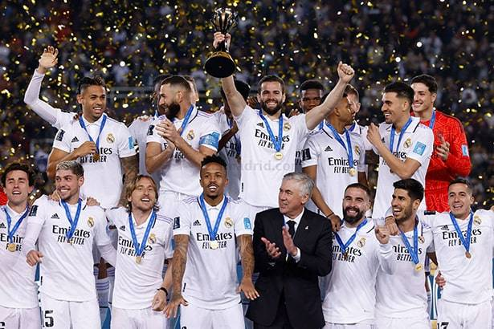

ФУТБОЛ
«Реа́л Мадри́д» (исп. Real Madrid Club de Fútbol, испанское произношение: real maðɾið kluβ ðe fuðβol (слушать)о файле) — испанский профессиональный футбольный клуб из города Мадрид. Признан ФИФА лучшим футбольным клубом XX века. «Реал Мадрид» — один из трёх клубов, которые ни разу не покидали высший испанский дивизион, двумя другими являются «Барселона» и «Атлетик Бильбао»[3]. Является одним из самых титулованных клубов в испанском футболе. На его счету 67 национальных трофеев: рекордные 35 титулов чемпиона страны (Ла Лига), а также 20 Кубков Короля, 12 Суперкубков Испании и 1 Кубок Лиги[4]. Является рекордсменом по количеству побед и голов в Лиге чемпионов (15 раз, единственная команда, выигрывавшая этот турнир — тогда ещё Кубок Европейских чемпионов — пять раз подряд, и единственная команда, выигрывавшая Лигу чемпионов в современном формате три раза подряд). По данным организации Deloitte, в сезоне 2016/17 «Реал Мадрид» был вторым по уровню заработка среди клубов с годовым доходом 674,6 миллиона евро[5]. Является одним из самых ценных спортивных клубов мира. В 2019 году признан самым дорогим футбольным клубом, с совокупной стоимостью 4,2 миллиарда долларов[6]. 1896 году был создан клуб «Футбол Скай», ставший прародителем мадридского клуба. Но официальной датой основания считается 6 марта 1902 года, когда братья Падрос и Хулиан Паласиосы открывают клуб под названием Madrid Football Club. 29 июня 1920 года король Испании Альфонс XIII присвоил клубу титул Королевский, что по-испански звучит как Real. Отсюда современное название клуба — Real Madrid. С момента основания клуб стал претендовать на лидерство в испанском футболе: уже в 1903 году он вышел в финал Кубка страны, где уступил «Атлетику» из Бильбао. Через несколько лет почётный трофей надолго «переехал» в столицу: «Мадрид» завоёвывал Кубок Испании четыре раза подряд. Чемпионаты Испании стали проводиться только с сезона 1928 а до того клубы определяли сильнейших по регионам. «Мадрид» (с 1920 года — «Реал Мадрид») за это время первенствовал в столичном округе 16 раз.
«Реа́л Мадри́д» (исп. Real Madrid Club de Fútbol, испанское произношение: real maðɾið kluβ ðe fuðβol (слушать)о файле) — испанский профессиональный футбольный клуб из города Мадрид. Признан ФИФА лучшим футбольным клубом XX века. «Реал Мадрид» — один из трёх клубов, которые ни разу не покидали высший испанский дивизион, двумя другими являются «Барселона» и «Атлетик Бильбао»[3]. Является одним из самых титулованных клубов в испанском футболе. На его счету 67 национальных трофеев: рекордные 35 титулов чемпиона страны (Ла Лига), а также 20 Кубков Короля, 12 Суперкубков Испании и 1 Кубок Лиги[4]. Является рекордсменом по количеству побед и голов в Лиге чемпионов (15 раз, единственная команда, выигрывавшая этот турнир — тогда ещё Кубок Европейских чемпионов — пять раз подряд, и единственная команда, выигрывавшая Лигу чемпионов в современном формате три раза подряд). По данным организации Deloitte, в сезоне 2016/17 «Реал Мадрид» был вторым по уровню заработка среди клубов с годовым доходом 674,6 миллиона евро[5]. Является одним из самых ценных спортивных клубов мира. В 2019 году признан самым дорогим футбольным клубом, с совокупной стоимостью 4,2 миллиарда долларов[6]. 1896 году был создан клуб «Футбол Скай», ставший прародителем мадридского клуба. Но официальной датой основания считается 6 марта 1902 года, когда братья Падрос и Хулиан Паласиосы открывают клуб под названием Madrid Football Club. 29 июня 1920 года король Испании Альфонс XIII присвоил клубу титул Королевский, что по-испански звучит как Real. Отсюда современное название клуба — Real Madrid. С момента основания клуб стал претендовать на лидерство в испанском футболе: уже в 1903 году он вышел в финал Кубка страны, где уступил «Атлетику» из Бильбао. Через несколько лет почётный трофей надолго «переехал» в столицу: «Мадрид» завоёвывал Кубок Испании четыре раза подряд. Чемпионаты Испании стали проводиться только с сезона 1928 а до того клубы определяли сильнейших по регионам. «Мадрид» (с 1920 года — «Реал Мадрид») за это время первенствовал в столичном округе 16 раз.